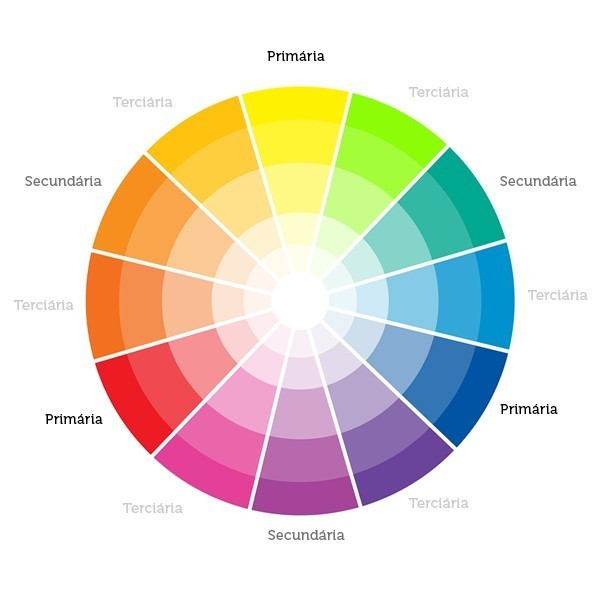
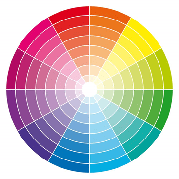
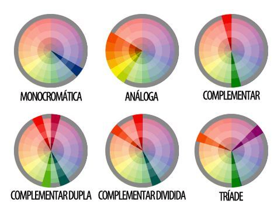

Nome Completo: Jhonathan Gabryel
Harmonia Cromática Escolhida:Harmonia monocromática
Paleta De Cores: #c6e9eb (azul-claro) #335685 (azul-médio) #e7ecf3 (azul-muito-claro) #0f1f33 (azul-escuro) #030c16 (azul-muito-escuro)
Círculo Cromático é uma representação das cores organizadas de forma sistemática, assim mostrando as relações entre si. É muito usado no design gráfico, nas artes gráficas, moda e decoração, pela sua capacidade de de criar combinações harmoniosas de cores
Monocromática: Usa apenas um tipo de cor, apenas mudando o tom e a saturação.
Análoga: Usa três cores que sejam viznhas no círculo cromático.
Complementar: Usa cores que sejam opostas no circulo cromatico, criando um alto contraste entre elas.
Triádica: Usa Três cores do circulo cromático.
Tetrádica: Usa quatro cores que estejão espeçadas igualmente no circulo cromatico.
Complementar Dividida:Combina um cor com outras duas sejam adjacentes a cor complementar.
Exemplos:
monocromática: Sites minimalistas que busquem uma estética lima e elegante.
Análoga: Perfeita aqueles projetos que querem um ambiente mais calmo e natural.
Complementar: Ideal para criar contraste e chamar a atenção de qualquer um que olhar para o projeto.
Triádica: Usado em projetos que queiram ser dinâmicos e vibrantes, onde você queira transmitir energia e criatividade.
Tetrádica: Muito usada quando se quer muita variação de cores e uma diversidade sem perder o equilíbrio.
Complementar Dividida: Equilibrio entre contraste e harmonia, não sendo muito agressivo.
Cabeçalhos: Utilize a cor principal ou algum tom mais destacavél.
Texto Principal: Utilize algum tom neutro (preto, cinza-escuro ou azul-escuro).
Bordas e Separadores: Use tons mais suaves que não irão poluir o seu layout.
Links: Devem ser destacados do texto princial.
Botões: Os principais devem ser vibrantes, geralmente uma cor primária.
Tabelas: Fundo neutro para facilitar a leitura, se destacando apenas o cabeçalho.
Listas: use cores que destaque as listas do texto principal.
Coolors: Gera paletas automáticas e permite ajustes rápidos.
Adobe Color: Cria combinações com base em imagens e harmonias.
Khroma: Usa IA para sugerir cores personalizadas.
Paletton: Explora harmonias cromáticas de forma interativa.
Color Hunt: Biblioteca de paletas prontas e tendências.
Material Palette: Paletas otimizadas para UI seguindo o Material Design.